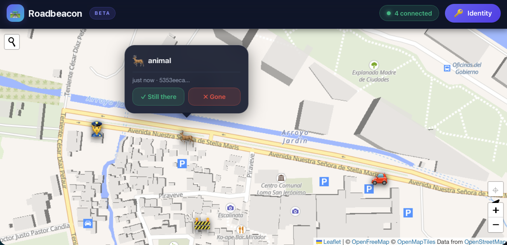
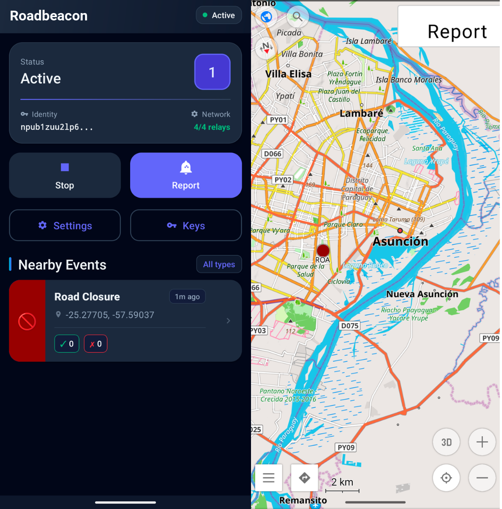

How it works
- Report. A driver picks a category (police, accident, road closure, construction, hazard and others). The app builds a Nostr event with the position, a geohash and an expiry time, and signs it with the driver's key. The key can be a persistent identity or an ephemeral one.
- Share. The signed event is published to Nostr relays. It can also travel as a compact binary message over MeshCore LoRa mesh networks (experimental, through a MeshCore Open build with the local API).
- See and confirm. Other drivers query relays by geohash and see the reports as markers on the map. They can confirm "still there" or deny "no longer there". Reports expire by type, for example after 1 hour for traffic jams and 30 days for speed cameras.


Get it
- Web app: cypherpunk.today/static/roadbeacon
- Android app (an OsmAnd plugin): Zapstore, or the APK from GitHub releases. With Obtainium: add Roadbeacon. OsmAnd must be installed to view events.
- Source code: github.com/jooray/roadbeacon. Public domain (Unlicense).
Follow on Nostr
- Open in your Nostr app
- njump.me
- Primal
- YakiHonne
- NIP-05:
roadbeacon@cypherpunk.today - Zap address:
roadbeacon@pay.cypherpunk.today
npub1cysu9vjwykzl6pjm2pxautnctxxga7zq4rq6c7njvhkdjfk747hq3q839h
About the name
Roadbeacon was called Roadstr until version 0.4. It was renamed to avoid confusion with the Roadstr navigation app, which is an independent project by a different author. The two are not affiliated and not interchangeable. They share the road event format (Nostr kinds 1315 and 1316), so each can display the other's reports.